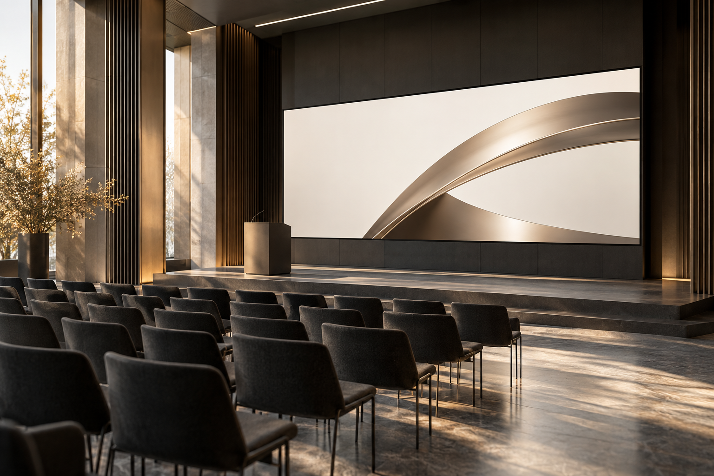
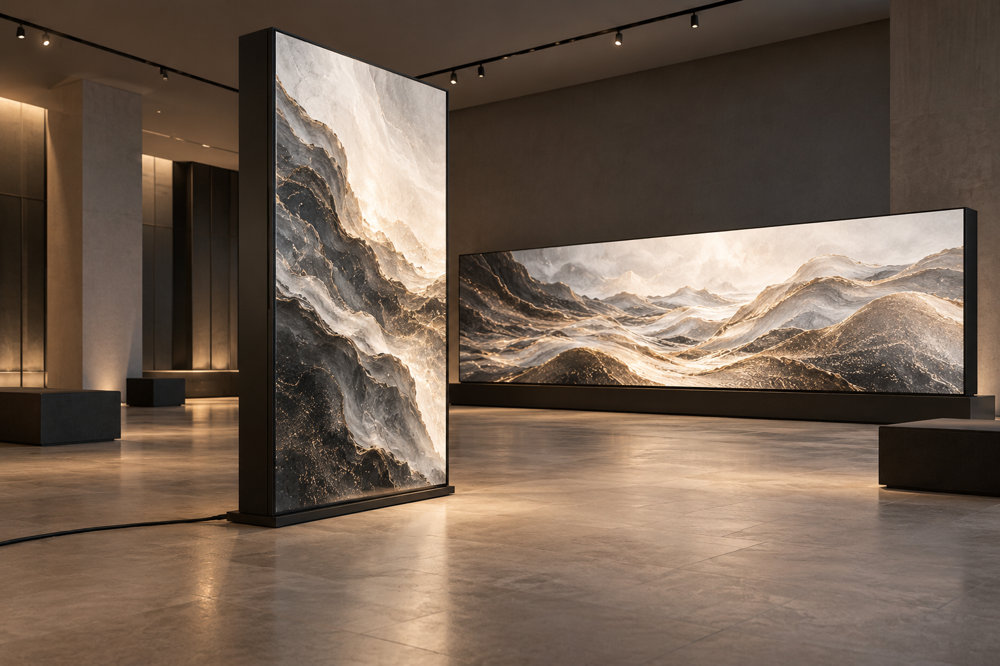
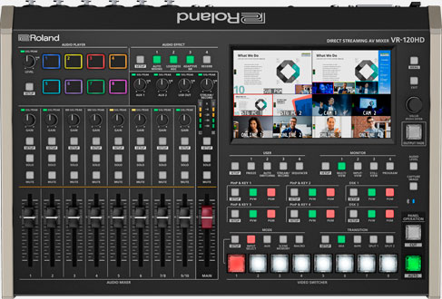
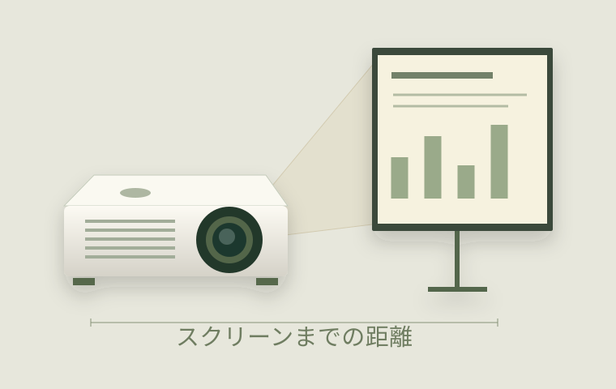
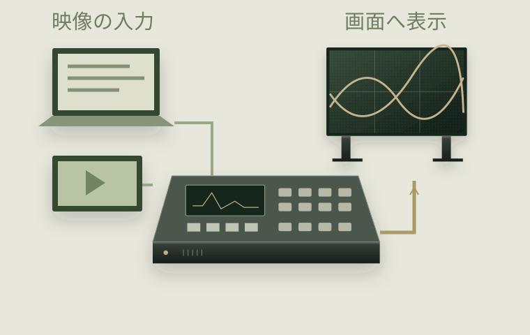
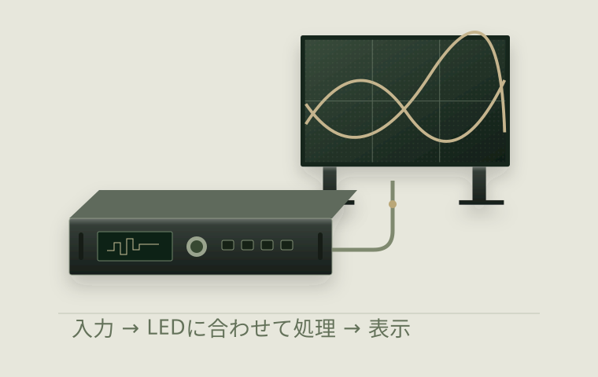
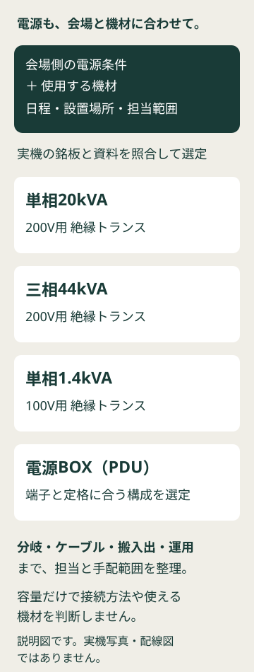
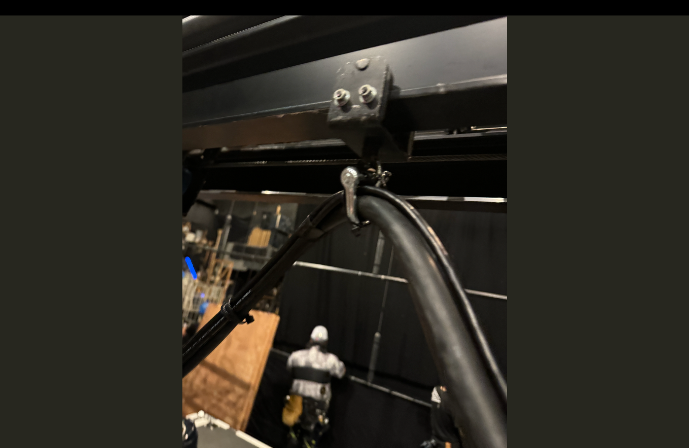

STEP 02 / つくるためのヒント
会場の奥から、文字が読めるか。
- 01 / 映すものスライド・紹介動画
- 02 / 組み合わせ画面 ＋ 素材を送る機器
- 03 / 当日の担当登壇・上映の順番に合わせて操作
準備するもの・機材のヒント
映す素材の種類・会場と画面の希望サイズ・再生の合図を確認。
機種は役割を知るための参考例です。構成・対応可否は案件ごとにご案内します。
EQUIPMENT RENTAL / 映像機材レンタル
場面を選ぶ。道具を知る。自分の画面を試す。
STEP 01 / つくりたい場面を選ぶ ↓

STEP 02 / つくるためのヒント
映す素材の種類・会場と画面の希望サイズ・再生の合図を確認。
機種は役割を知るための参考例です。構成・対応可否は案件ごとにご案内します。

STEP 02 / つくるためのヒント
設置場所と向き・流す内容と会期・起動と終了の担当を確認。
機種は役割を知るための参考例です。構成・対応可否は案件ごとにご案内します。

STEP 02 / つくるためのヒント
画面の数と配置・素材と進行表・操作担当とリハーサル日程を確認。
機種は役割を知るための参考例です。構成・対応可否は案件ごとにご案内します。
空間画像は使い方を伝えるコンセプトビジュアルです。型番から探す ↗
FIND YOUR TOOLS
写真の機種は参考例です。在庫一覧ではありません。仕様・画像出典は各ガイドへ。
FROM SOURCE TO SCREEN
素材を選ぶ。映像を切り替える。画面に届ける。
ボタンを押すと、会場の景色が変わります。
PCから送った映像をスイッチャーで選び、LEDプロセッサーで画面に合わせて表示。素材ボタンで、会場の画が変わります。
映像を切り替える機材を見る ↗PC・再生機器・カメラ
スイッチャー・LEDプロセッサー
LEDディスプレイ
機器の役割と映像の流れを試す構成例です。実機の接続・性能を示す配線図ではありません。
PLAY WITH SCALE
サイズを変えて、見え方を試す。
画面サイズを試す ↗
写真・仕様の出典は機材ガイドへEQUIPMENT / THE FOUR ROLES
会場に合う画面と、素材を届ける機材。
それぞれの役割から、必要な組み合わせを考えます。
機種が未定でも大丈夫です。まずは日程・会場・映したい内容から。下の情報は、分かる範囲で整理するための目安です。
LED DISPLAY
パネルを組み合わせて、大きな映像面をつくる。
ステージの背景や展示空間など、画面そのものを空間の一部にしたいときに。見る距離と素材に合わせ、画面サイズや画素の細かさを考えます。

PROJECTION
光を投写して、スクリーンに映像を映す。
会議資料や上映映像を大きく見せたいときに。スクリーンまでの距離、会場の明るさ、客席からの見え方を合わせて検討します。

写真：Solomon203 / Wikimedia Commons · CC BY-SA 4.0（海外モデル）

SWITCHING & SCALING
資料、動画、カメラ。映す映像を切り替える。
入力機器が複数あるときや、進行に合わせて表示を変えるときに。入力端子や映像の解像度をそろえ、必要な切り替え・調整機能を選びます。

写真：Solomon203 / Wikimedia Commons · CC BY-SA 4.0

LED PROCESSING
入力映像を、LED画面の構成に合わせて届ける。
LEDパネルの並びや画素数に合わせて表示を設定する機器。組み合わせるLEDとの対応、表示領域、色や明るさの調整を考えます。
写真の機種は役割を知るための参考例です。機種・数量・手配可否は、ご利用日程と用途に合わせてご案内します。
料金は構成ごとのお見積りです。機種・数量・利用期間に加え、周辺機材、搬入出、設営・操作の人員を分けて整理します。機材のみのレンタルに、設営・本番操作・撤去が自動的に含まれるわけではありません。必要な範囲と手配可否を事前に確認します。
型番が決まっていなくても。
使いたい場面から、ご相談いただけます。
POWER PLANNING
LEDや映像機材を使う構成では、会場側の電源と周辺機材も一緒に整理します。

実機の銘板と資料を照合して構成を決めます。容量や電圧区分だけでは、接続方法や使える機材は決まりません。適合が分からない状態で接続せず、電源担当と確認します。
日程・屋内外・使用機材・会場側の電源条件・設置場所・搬入出や運用の担当範囲をお知らせください。機種・仕様・手配可否と料金は、日程と使用条件に合わせてご案内します。
電源を含めた機材構成を相談する ↗02 / LED GUIDE
型番が分からなくても、次のポイントからお話を進められます。
03 / A CLEAR RENTAL BRIEF
在庫一覧ではなく、ご相談のための機材ガイドです。個別の機材構成とレンタル内容はお打ち合わせにてご案内します。
QUESTIONS
希望する幅・高さと、会場、利用日程、映す内容をお聞かせください。設置方法や表示内容も含めて整理します。
メーカー・型番・数量・利用期間をお伝えください。ご希望の機材の手配可否をご案内します。
機材レンタルと技術提供をあわせてご相談いただけます。設営・本番・撤去のうち、必要な工程をお聞かせください。
機材の仕様・数量・利用期間に加え、技術提供の範囲や会場での作業内容によって異なります。ご相談内容をもとに個別にご案内します。
BUDGET & SCALE
LEDの枚数と想定額から、相談前の概算プランへ。
サイズ・予算を試してみる ↗LET’S TALK
技術提供と映像機材レンタル。ご希望に合わせて、担当範囲を整理します。
POWER / STAGE / TRANSPORT
画面と一緒に使う機材も、用途からご相談いただけます。型式・数量・手配可否は、ご利用日程と必要な構成に合わせてご案内します。
会場の電源と、使用する機材の電源条件を合わせるために検討するトランスです。
入力・出力の電圧、相数、端子、接地、設置場所と搬入条件を電源担当と整理します。容量の呼び方だけで接続方法は決まりません。
作業を止める条件
実機の銘板と取扱資料で適合を照合できない場合は接続せず、電源担当へ相談します。
LEDなどの機材へ電源を分けて送るための機材です。トランスやケーブルと合わせて構成を考えます。
会場の供給条件、入力・出力端子、回路ごとの負荷、分岐ケーブルと使用機材を整理します。
作業を止める条件
端子の外観だけで接続を判断しません。定格や組み合わせが分からない場合、破損・焼け・異常発熱がある場合は使用を止めます。
舞台・映像装置の構成に合わせて使うレール部材です。必要な長さと、組み合わせる装置から選びます。
全長、接合部、固定金具、取付場所、移動範囲を図面と実物でそろえます。
作業を止める条件
型式ごとの対応金具や支持条件が分からない状態では組み立て・吊り込みを進めず、装置担当へ相談します。
ケーブルや周辺機材をまとめて保管・運搬するためのカゴ台車です。棚を使って荷物を分けられます。
積載物、外寸、扉・棚・キャスター、搬入経路と段差を整理します。積載条件は使用する台車の表示・資料に従います。
作業を止める条件
扉や棚の固定不良、キャスターの破損、荷崩れのおそれがある場合は移動を止めます。
装置の下部や背面など、見せたくない部分を覆い、舞台の見え方を整える黒い幕です。
覆う範囲、寸法、取付方法、防炎表示の必要条件を会場と整理します。通気・点検・避難に必要な空間を残します。
作業を止める条件
防炎条件を満たすことが確かめられない場合や、熱源・可動部・避難経路に干渉する場合は取り付けを止めます。

レールと組み合わせる可動部材です。装置の構成に合わせて、取付部と動く範囲を整理します。
レール形状、金具の取付部、端部の抜け止め、ケーブルとの干渉を装置担当と照合します。
作業を止める条件
対応部材・荷重条件が分からない状態や、引っ掛かり・破損がある場合は動かさず、装置担当へ相談します。
参考レンタル料金：個別見積り。機材・数量・利用期間に加え、付属品、搬入出、設営・操作の担当範囲を分けてご案内します。写真は部材の外観を示すもので、接続・支持方法の指示ではありません。
周辺機材を含めて相談する ↗